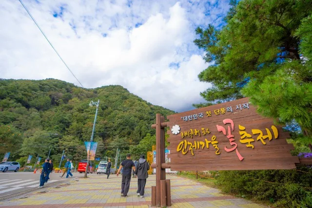
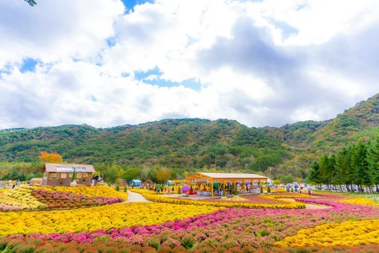
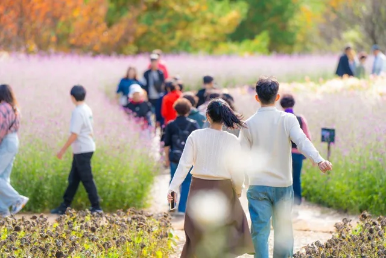
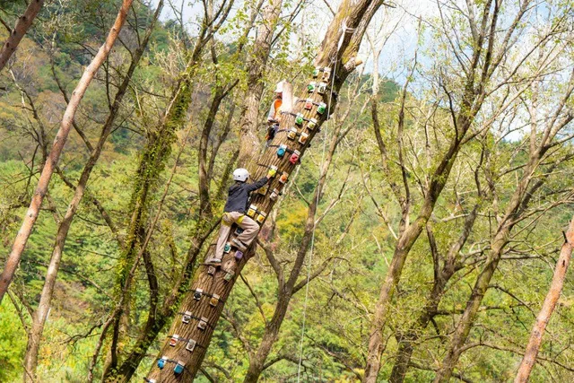
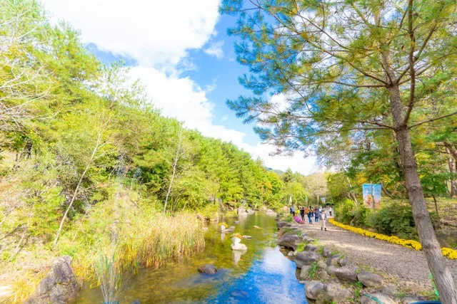
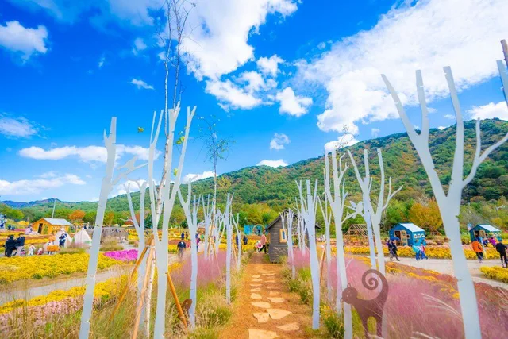

▲ 용대관광지 일원에 조성된 가을꽃길. 마편초와 야생화가 만개한 산책로 뒤로 인제의 산줄기가 펼쳐진다 ⓒ 한국관광공사
강원 인제군 북면 용대리, 설악산 자락 아래 자리한 용대관광지 일원이 매년 가을이면 꽃밭으로 뒤덮인다. 인제가을꽃축제가 2026년 9월 24일 개막해 10월 11일까지 18일간 이어지는 것이다. 지난해 30만 명 넘는 방문객이 다녀가며 인제군 대표 가을 축제로 자리 잡은 이 행사는 올해 박인환 시인 탄생 100주년을 기념한 특별 정원을 새로 선보인다. 개최 기간과 장소, 가을꽃 볼거리, 프로그램, 가는 법과 인제 연계 여행 코스까지 방문 전 확인할 정보를 순서대로 정리했다.
1. 축제 개요 — 언제, 어디서, 무엇을 주제로 열리나

▲ 용대관광지 초입에 세워진 '대한민국 첫 단풍의 시작, 인제가을꽃축제' 안내판 ⓒ 한국관광공사
2026 인제가을꽃축제는 강원특별자치도 인제군 북면 용대리 1821-2 일대 용대관광지에서 열린다. 축구장 11개를 합친 규모인 약 82,800㎡ 부지에 국화, 마편초, 댑싸리 등 가을꽃 약 2만 그루, 50만여 송이가 심겼다. 올해 주제는 '인제에서 꽃길만 걷자'로, 행사장은 행복하길·사랑하길·소통하길·힐링하길 등 네 가지 감성을 담은 테마 공간으로 나뉜다. 운영 시간은 매일 오전 10시부터 오후 6시까지이며, 입장료는 무료다.
2. 가을꽃 종류·볼거리 — 마편초 꽃길부터 박인환 낭만정원까지

▲ 국화와 야생화가 넓게 펼쳐진 행사장 전경. 목조 파빌리온을 중심으로 꽃밭이 물결친다 ⓒ 한국관광공사
축제장을 채우는 대표 꽃은 보랏빛 마편초와 노란빛 국화, 그리고 구절초다. 산책로 양옆으로 마편초가 길게 이어진 구간은 인제가을꽃축제에서 가장 사진이 잘 나오는 곳으로 꼽히며, '사랑하길' 구역에는 야생화 정원과 국화분재 전시장이 함께 마련된다. '행복하길' 구역에는 올해 새로 조성된 박인환 낭만정원이 있다. 시인 박인환의 탄생 100주년을 기념해 그의 문학세계를 모티브로 한 경관 조형물을 세운 특별 공간으로, 꽃밭 사이로 문학적 감성을 담은 포토존이 이어진다.

▲ 마편초 꽃밭 사이 산책로. 단풍이 시작된 배경과 어우러져 가을 분위기가 짙다 ⓒ 한국관광공사
3. 프로그램 — 트리클라이밍부터 시티투어까지

▲ '힐링하길' 구역의 트리클라이밍 체험. 숲카페·트리하우스·싱잉볼 명상 등과 함께 운영된다 ⓒ 한국관광공사
'소통하길' 구역에는 수변 산책로와 느린 우체통이 마련돼 있고, '힐링하길' 구역에서는 숲카페, 트리하우스, 트리클라이밍, 싱잉볼 명상, 유아숲 체험, 책갈피 만들기 등 체험 프로그램을 즐길 수 있다. 축제 기간에는 매일 버스킹 공연과 특별공연이 열리고, 가위바위보 대회·SNS 방문후기 이벤트·스탬프투어·전국사생대회 같은 참여형 이벤트도 이어진다. 농특산물 판매장과 국화 판매장, 푸드트럭도 상시 운영된다. 특히 화·목·금요일에는(추석 당일인 9월 25일 제외) 축제장과 여초서예관, 백담사를 잇는 특별 시티투어가 별도로 운행돼, 축제 관람과 인근 명소 방문을 함께 계획할 수 있다. 시티투어는 인제군 관광플랫폼 '지금, 여기, 인제!'에서 사전 예약해야 하며, 이용요금은 1인당 1만 원이지만 이용객에게 같은 금액의 인제사랑상품권을 지급해 사실상 무료로 이용할 수 있다.

▲ '소통하길' 구역의 수변 산책로. 개울을 따라 걷는 코스에 느린 우체통이 놓여 있다 ⓒ 한국관광공사
4. 가는 법·주차 — 입장료 무료, 주차 500대 규모

▲ 꽃밭 사이에 세워진 흰색 나무 조형물 포토존. 핑크뮬리와 어우러져 인기 촬영 스팟으로 꼽힌다 ⓒ 한국관광공사
축제장 입장료와 주차비는 모두 무료이며, 일부 유료 체험 프로그램만 별도 비용이 든다. 행사장 인근에는 500대 규모의 무료 주차장이 운영된다. 대중교통을 이용할 경우 동서울종합터미널에서 인제행 시외버스를 타고 용대리에서 내린 뒤, 축제 기간 운행되는 무료 셔틀버스로 갈아타면 된다. 자가용을 이용한다면 서울양양고속도로 인제 나들목을 거쳐 44번 국도를 따라 북상하면 용대관광지에 닿는다. 주말과 축제 절정기에는 진입로 정체가 있을 수 있어 오전 일찍 도착하는 편이 여유 있게 관람하기 좋다.
| 항목 | 내용 |
|---|---|
| 기간 | 2026년 9월 24일(목) ~ 10월 11일(일), 18일간 |
| 장소 | 강원특별자치도 인제군 북면 용대리 1821-2 일원(용대관광지) |
| 운영시간 | 매일 10:00~18:00 |
| 입장료·주차 | 무료(일부 체험 프로그램만 유료) |
| 주차 | 약 500대 규모 무료 주차장 |
| 대중교통 | 동서울종합터미널→인제행 시외버스→용대리 하차→축제 기간 무료 셔틀 |
| 문의 | 인제군문화재단 033-460-8900 |
5. 인제 연계 여행 코스 — 원대리 자작나무숲, 백담사까지

▲ 용대관광지에서 차로 이동 가능한 원대리 자작나무숲. 축제와 함께 묶기 좋은 인제 대표 코스다 ⓒ Wikimedia Commons
용대관광지는 인제 여행의 다른 명소들과 묶기에도 위치가 좋다. 축제장에서 백담사 방향으로는 오세암·수렴동 계곡으로 이어지는 설악산 자락이 있고, 화·목·금요일 시티투어를 이용하면 백담사와 여초서예관을 축제장과 함께 둘러볼 수 있다. 자작나무 특유의 하얀 수피와 노랗게 물든 단풍이 겹치는 원대리 자작나무숲도 차로 이동 가능한 거리에 있어, 오전엔 꽃축제, 오후엔 자작나무숲으로 이어지는 일정을 짜는 방문객이 많다(원대리 자작나무숲 상세 정보는 카프리즘의 원대리 자작나무숲 가이드 기사 참고). 1974년부터 22년간 조림한 69만 그루 규모의 숲으로, 매표소에서 숲 입구까지 임도(원대임도 3.8km 또는 원정임도 3.2km, 편도 60~80분)를 걸어 들어가야 하는 만큼 왕복 이동에만 최소 2시간가량 잡아야 한다. 계곡과 산악 지형이 많은 인제 특성상 방태산 자연휴양림 등 근교 산행 코스와 연계하는 것도 방법이며, 두 코스를 하루에 모두 소화하려면 이동 시간을 넉넉히 잡는 편이 좋다.
✅ 2026 인제가을꽃축제, 가기 전 체크리스트
· 2026년 9월 24일(목)~10월 11일(일) 18일간, 강원 인제군 북면 용대관광지 일원
· 약 82,800㎡ 부지에 국화·마편초·구절초 등 가을꽃 약 2만 그루, 50만여 송이 식재
· 주제는 '인제에서 꽃길만 걷자', 행복하길·사랑하길·소통하길·힐링하길 4개 테마 공간
· 올해 신설된 박인환 낭만정원(시인 탄생 100주년 기념 경관 조형물) 눈여겨볼 만
· 트리클라이밍·숲카페·수변 산책로 등 체험, 화·목·금(추석 당일 제외) 백담사·여초서예관 연계 시티투어 운행(예약제, 1만 원 결제 후 동액 상품권 지급)
· 입장료·주차 모두 무료, 약 500대 규모 무료 주차장 운영, 매일 10:00~18:00
· 동서울종합터미널에서 인제행 버스 후 용대리 하차, 축제 기간 무료 셔틀버스 이용 가능
· 원대리 자작나무숲 등 인제 근교 명소와 연계 일정 추천, 세부 프로그램은 방문 전 공식 홈페이지 재확인